カスケード攻略ガイド・ヒーローウォーズ ドミニオン エラのスキルダメージ、育成優先度、編成
- 作成: Alexandre Domingos. .
カスケードは、ヒーローウォーズ ドミニオン エラの中でも特に神秘的で葛藤を抱えたヒーローです。 タイタンの血を引きながら人として育った彼の二面性は強い印象を残し、 最終的にどちらの道を選ぶのか気になる存在です。
このガイドでは、カスケードの力、ミドルラインメイジとしての役割、 知力ベースの能力をどう活かすべきかを分かりやすく解説します。 人間性とタイタンの力を併せ持つヒーローを使いこなしたいなら、 このページが役に立ちます。
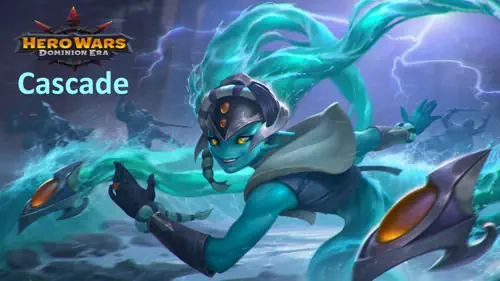
カスケードとは？
カスケードはミドルラインに立つメイジで、継続的な魔法ダメージ、回復阻害、位置ずらし、知力系味方への支援を同時にこなします。攻撃テンポを落とさずに強いユーティリティを加えたい魔法編成で特に活躍します。

- メインロール: メイジ
- 追加ロール: サポート / 回復阻害
- 主属性: 知力
- 配置: ミドルライン (ポジション45)
- おすすめペトロン: マーリン、アクセル、ビスケット、ホルズ
カスケード - 最大ステータス
 パワー パワー184,600 |
 ヘルス ヘルス555,560 |
 敏捷 敏捷2,351 |
 知力 知力18,930 |
 力 力3,006 |
 物理攻撃 物理攻撃23,682 |
 魔法攻撃 魔法攻撃124,431 |
 魔法貫通 魔法貫通40,337 |
 アーマー アーマー28,884 |
 魔法防御 魔法防御30,539 |
 命中 命中18,930 |
 クリ耐性 クリ耐性18,930 |
カスケードの長所と短所
長所
- Hydrokinesisは強力な回復阻害と蘇生封じを持ち、耐久編成への圧力が非常に高いです。
- Tidal Waveは高いバーストと位置崩しを同時に行え、魔法編成で戦闘テンポを握れます。
- Refluenceは魔法チームで特によく伸び、連続ヒットを追加ダメージに変えられます。
- Elemental Surgeは物理通常攻撃を持つ知力系味方の支援として優秀です。
- 魔法攻撃、魔法貫通、攻撃寄りのペトロン支援と噛み合います。
短所
- 真価を出すには魔法寄りの味方編成にかなり依存します。
- 物理主体のチームではRefluenceとElemental Surgeの恩恵が小さくなります。
- ミドルライン配置のため、バーストや強引なダイブに狙われやすいです。
- 圧力と補助は強いですが、単体拘束の強さでは最上位ではありません。
- 味方やペトロンの支援なしでは自己完結性が低めです。
カスケードのスキル強化優先度 - ヒーローウォーズ ドミニオン エラ
ヒーローウォーズ ドミニオン エラでカスケードのスキルをどう強化するべきかを分かりやすく整理しました。実際の数値、ダメージ式、ダメージ種別ごとの色分けも含めて解説しています。
重要: 以下の値は cascade_hwde.json の最大ステータスデータに基づいて更新しています。
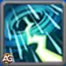
Hydrokinesis
カスケードは 6 秒間、激しい雨を呼び出し、すべての敵に毎秒 魔法ダメージ を与えます。効果中、敵は 受ける回復量が 50% 減少 し、 復活できなくなります。
計算式: (魔法攻撃の 15% + 5850) を毎秒与え、 6 秒間で 1 tick あたり 24,515 の魔法ダメージ になります。
強化優先度: 非常に高い - カスケードで最重要のスキルです。回復阻害と蘇生封じの両方を持つため、強力なヒーラー入り編成に対して特に重要です。
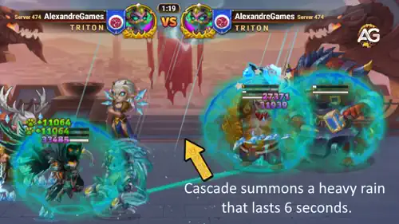
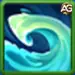
Tidal Wave
カスケードは巨大な波に変身して敵を貫通し、陣形を崩します。 命中した敵全員に 魔法ダメージ を与え、前衛と後衛の配置を大きく乱します。
計算式: (魔法攻撃の 45% + 19,600) で、レベル 130 時に 75,594 の魔法ダメージ を与えます。
強化優先度: 高い - 高火力と優秀な位置ずらしを両立します。スキル 3 の Refluence を直接強化し、追加ダメージの起点になります。
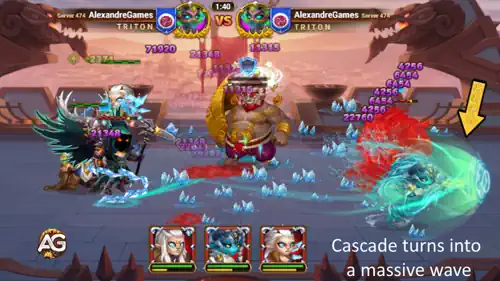
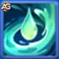
Refluence
Tidal Wave を受けた敵には 5 秒間、水の印が付与されます。 印の付いた敵が魔法攻撃を受けるたびに、追加で 魔法ダメージ を受けます。
計算式: (魔法攻撃の 12% + 6,500) で、レベル 130 時は水の印の発動ごとに 21,432 の魔法ダメージ を与えます。
強化優先度: 中高 - 魔法編成では非常に優秀です。逆に物理中心のチームでは価値が下がります。
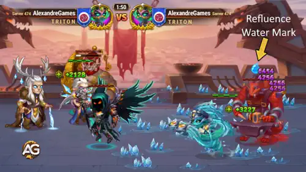
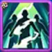
Elemental Surge
メインステータスが知力の味方全員を強化します。 その味方の通常攻撃は、自身の魔法攻撃に応じた 追加の魔法ダメージ を与えるようになります。
計算式: 強化された味方の通常攻撃は、その味方の魔法攻撃の 46% に相当する追加魔法ダメージを与えます。
強化優先度: 中 - 知力系の魔法編成では有効ですが、カスケード自身の直接火力や回復阻害ほど優先度は高くありません。
Elemental Surge の補足: このボーナスは、物理通常攻撃を行う知力ヒーローにのみ適用されます。通常攻撃に、そのヒーローの魔法攻撃 46% 分の追加魔法ダメージを付与します。
この効果を受けないヒーロー: セレステ と サトリ。通常攻撃がすでに魔法属性だからです。
通常攻撃が物理属性の魔法使いである ラース、クリスタ、フェイスレス、モージョー などはこの効果を通常どおり活かせます。
ヒーローウォーズ ドミニオン エラにおけるカスケードのおすすめスキン
カスケードのスキンは、まず火力の伸びを優先し、その後で長期戦に必要な耐久を補うのが基本です。Cybernetic Skin は最優先の攻撃スキン、Default Skin は序盤から扱いやすく、Stellar Skin は HP 面で最も優秀な防御スキンです。
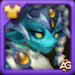
Default Skin - 知力
上昇ステータス: 知力 +1365
- 知力由来の魔法攻撃: +4095
- 知力由来の魔法防御: +1365
- 知力由来の物理攻撃: +1365
強化優先度: 高い - 魔法攻撃がカスケードの全スキルを強化するため、非常に重要です。
最大レベルまでに必要な知力スキンストーン合計:
 30,825
30,825
Mythic Skin - アーマー
上昇ステータス: アーマー +10,650
強化優先度: 低い - 物理ダメージへの耐久には役立ちますが、カスケードの攻撃性能は伸ばしません。
最大レベルまでに必要なスキンストーン合計:
55,410
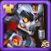
Cybernetic Skin - 魔法攻撃
上昇ステータス: 魔法攻撃 +10,650
強化優先度: 非常に高い - カスケードで最優先の攻撃スキンです。魔法攻撃がすべてのスキル火力を直接伸ばし、瞬間火力を大きく高めます。
最大レベルまでに必要なスキンストーン合計:
55,410
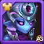
Stellar Skin - ヘルス
上昇ステータス: ヘルス +106,645
強化優先度: 中高 - Stellar Skin はカスケードで最も優秀な防御スキンです。追加ヘルスによりバーストに耐えやすくなり、場に残って回復阻害の圧力を継続できます。
最大レベルまでに必要なスキンストーン合計:
55,410
カスケードのグリフ強化優先度
ヒーローウォーズ ドミニオン エラでカスケードのグリフを最適化するには、魔法攻撃とスキル効率を最大化しつつ、耐久と貫通のバランスも取ることが重要です。
第1グリフ - 魔法攻撃
上昇ステータス: 魔法攻撃 +6,500
強化優先度: 高い - カスケードの主力ステータスであり、全スキルが魔法攻撃に直接依存します。
第2グリフ - ヘルス
上昇ステータス: ヘルス +62,200
強化優先度: 中 - 生存力を伸ばし、強力なスキルを使うまで場に残りやすくなります。
第3グリフ - 魔法貫通
上昇ステータス: 魔法貫通 +6,500
強化優先度: 高い - 敵の魔法防御を抜くために重要で、カスケードのスキルダメージをしっかり通せます。
第4グリフ - 魔法防御
上昇ステータス: 魔法防御 +6,500
強化優先度: 低い - 敵の魔法編成には役立ちますが、攻撃系グリフより優先度は下です。
第5グリフ - 知力
上昇ステータス: 知力 +1,135
- 知力由来の魔法攻撃: +3,405
- 知力由来の魔法防御: +1,135
- 知力由来の物理攻撃: +1,135
強化優先度: 高い - 知力はカスケードの主属性で、魔法攻撃と防御の両方を底上げします。
ヒーローウォーズ ドミニオン エラにおけるカスケードのアーティファクト強化優先度
カスケードのアーティファクトをどの順番で強化するべきかを整理しました。戦闘で影響が大きい順と、その理由を簡潔にまとめています。
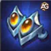
武器アーティファクト: Claws of the River Spirits
上昇ステータス: 魔法攻撃 +50,190
強化優先度: 非常に高い - カスケードの主力スキル Hydrokinesis を大きく強化します。チーム全体の魔法攻撃を上げるため、カスケード本人だけでなく他の魔法使いとも高い相性があります。最優先で強化するべきです。

書物アーティファクト: Manuscript of the Void
上昇ステータス: 魔法貫通 +10,680 | 魔法攻撃 +8,364
強化優先度: 高い - 敵の魔法防御を抜きやすくし、Hydrokinesis のダメージと回復阻害を硬い相手にも通しやすくします。重要ですが、チーム全体を強化する武器アーティファクトの次です。

リングアーティファクト
上昇ステータス: 知力 +6,249
- - 知力由来の魔法攻撃: +18,747
- - 知力由来の魔法防御: +6,249
- - 知力由来の物理攻撃: +6,249
強化優先度: 中 - 安定した自己強化にはなりますが、影響は主に本人だけです。武器や書物ほどチーム全体への貢献は大きくないため、その後で十分です。
カスケードにおすすめのペトロン
カスケードは、魔法攻撃を伸ばして攻撃スキルを補強できるペトロンと特に相性が良いです。耐久を補ったり、回復対策を重ねられるペトロンも有力です。
1位:

マーリンは魔法攻撃と魔法貫通を与え、カスケードのスキル火力を直接伸ばします。パトロン効果で魔法スキルの回転も強化でき、総合的に最も優秀な攻撃寄りの選択です。
2位:

ビスケットは魔法攻撃とアーマーを与え、さらに敵への回復阻害も付与します。カスケードの Hydrokinesis と重なるため、ヒーラーの多い編成に非常に強くなります。
3位:

アクセルは魔法攻撃とアーマーを与えますが、本当の価値はダメージ分散による保護です。一撃の最大被ダメージを抑えられるため、バースト相手への耐久を大きく高めます。防御寄りでは最有力です。
4位:

ホルズは魔法攻撃とアーマーを与え、カスケードと近くの知力味方にシールドを付与します。状況次第では有効ですが、カスケードはまず攻撃面を伸ばしたいので、優先度はやや下がります。
ヒーローウォーズ ドミニオン エラにおけるカスケードのシナジー

クリスタ
クリスタの Frozen Needles は地面に氷の針を展開し、敵がその上を移動するとダメージを与えます。 カスケードの Tidal Wave は敵をその針の上へ押し込み、移動ダメージをさらに受けさせます。 その後に敵へ 水の印 も付くため、カスケードの Refluence が強化され、 さらに強力な魔法コンボへ繋がります。2人を組ませると敵全体へ継続的な圧力をかけられます。

ラース
敵に 水の印 が付いていると、ラースは一気に強力になります。 カスケードの Refluence によって印を維持しやすくなり、ラースは 40% の追加ダメージとより長いスタンを狙えます。 この相性により、カスケードはツインズ編成（クリスタ + ラース）の優秀な相方になります。
カスケードにおすすめのウォーフラッグ
カスケードは、魔法圧力を高めるもの、敵の回復を抑えるもの、スキル回転を乱すものと相性が良いです。これらのウォーフラッグは魔法編成での影響力を大きく伸ばします。

氷結のウォーフラッグ:
氷結のウォーフラッグは 18 秒ごとに 8 秒間、敵のスキルレベルを低下させます。強力な魔法使いやヒーラーを弱体化できるため、カスケードの Hydrokinesis と Refluence の圧力がさらに通りやすくなります。
カスケードとチームへの利点: 強力なキャスター相手に特に有効で、敵の火力と制御を落としつつ、こちらの魔法圧力を相対的に高めます。

衰退のウォーフラッグ:
衰退のウォーフラッグは敵の回復量を 10% 減少させます。カスケードの Hydrokinesis が持つ回復阻害と蘇生封じに重なるため、強力なアンチヒール構成になります。
カスケードとチームへの利点: ヒーラーが多い編成に最適で、敵サポートがカスケードの継続ダメージに耐えにくくなります。

ペット強化のウォーフラッグ:
この旗はペットスキルの威力を 10% 高めます。カスケードは マーリン や ビスケット の支援で火力と回復阻害性能を伸ばしやすいため、この旗はその強みを直接強化します。
カスケードとチームへの利点: マーリン や ビスケット を組み合わせる場合に特に有効で、攻撃面と補助面の両方を強化できます。
カスケードのおすすめ編成 - ヒーローウォーズ ドミニオン エラ
フラッフィ + アウグストゥス + カスケード 編成
フラッフィとアウグストゥスを軸にしたこの編成は、セバスチャン対策として組まれる防御寄りの魔法編成です。羊とフクロウのシナジーで、セバスチャンの影響力を抑えます。
この編成で重要な役割を担うのがカスケードです。通常なら魔法ダメージを止めてしまう ルーファス のような相手に対応するうえで不可欠で、相手の防御を抜けてチームの圧力を維持できます。
さらにカスケードは、コントロールと継続火力によって長期戦でも優位を保ちやすくします。防御寄りの編成では、瞬間火力よりも安定感と盤面制御が重要になるため、この役割が大きいです。
魔法編成は一般に アイザック に弱いものの、この構成では オリオン や Polaris を使って魔法防御を削り、アウグストゥスがその圧力を純ダメージへ変換できます。フラッフィも セバスチャン + アイザック の組み合わせを抑え、戦略を通しやすくします。
総合的に見ると、カスケードがいない場合、この編成は一部のカウンター相手にかなり苦しくなります。そのため、彼はこの構成の中でも特に重要なピースです。
結論
カスケードは クリスタ や ラース といった相性の良い英雄がいるため、魔法寄りの編成に自然に組み込みやすいヒーローです。 彼のスキルは安定したダメージを出すだけでなく、水の印 を広げ、Tidal Wave で敵の位置を乱すことで、味方の攻撃準備も整えます。 クリスタと組めば敵を氷の針の上へ押し込み続けられ、ラースは印を利用して長いスタンと追加ダメージを狙えます。
カスケードを中心に編成を組むなら、本当の価値は相性の良い味方と組んだときに発揮されることを覚えておきましょう。 単体でも十分に強力ですが、適切なシナジーが揃うと、ヒーローウォーズ ドミニオン エラの戦況をひっくり返せる 試合を決める魔法使い になります。
おすすめ動画
注目ヒーローのガイドもチェック


感想を聞かせてください
ヒーローウォーズ ドミニオン エラ向けのカスケード攻略は役に立ちましたか。分かりにくかった点や、追加してほしい内容があればぜひ教えてください。Alexandre Games のコメント欄で意見、質問、提案を共有できます。
下のボタンからコメントを読み込めます。